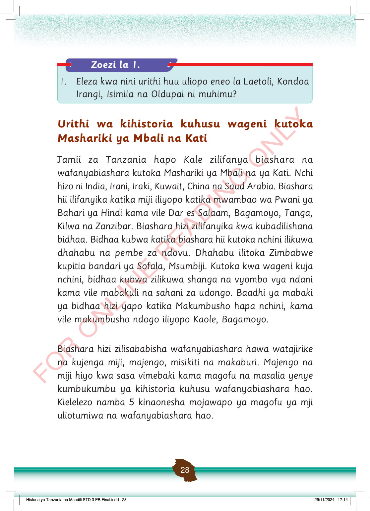

Zoezi la 1.
1. Eleza kwa nini urithi huu uliopo eneo la Laetoli, Kondoa Irangi, Isimila na Oldupai ni muhimu?
Urithi wa kihistoria kuhusu wageni kutoka Mashariki ya Mbali na Kati
Jamii za Tanzania hapo Kale zilifanya biashara na wafanyabiashara kutoka Mashariki ya Mbali na ya Kati.
Nchi hizo ni India, Irani, Iraki, Kuwait, China na Saud Arabia.
Biashara hii ilifanyika katika miji iliyopo katika mwambao wa Pwani ya Bahari ya Hindi kama vile Dar es Salaam, Bagamoyo, Tanga, Kilwa na Zanzibar.
Biashara hizi zilifanyika kwa kubadilishana bidhaa.
Bidhaa kubwa katika biashara hii kutoka nchini ilikuwa dhahabu na pembe za ndovu.
Dhahabu ilitoka Zimbabwe kupitia bandari ya Sofala, Msumbiji.
Kutoka kwa wageni kuja nchini, bidhaa kubwa zilikuwa shanga na vyombo vya ndani kama vile mabakuli na sahani za udongo.
Baadhi ya mabaki ya bidhaa hizi yapo katika Makumbusho hapa nchini, kama vile makumbusho ndogo iliyopo Kaole, Bagamoyo.
Biashara hizi zilisababisha wafanyabiashara hawa watajirike na kujenga miji, majengo, misikiti na makaburi.
Majengo na miji hiyo kwa sasa vimebaki kama magofu na masalia yenye kumbukumbu ya kihistoria kuhusu wafanyabiashara hao.
Kielelezo namba 5 kinaonesha mojawapo ya magofu ya mji uliotumiwa na wafanyabiashara hao.
Historia ya Tanzania na Maadili STD 3 PB Final.indd 28
29/11/2024 17:14